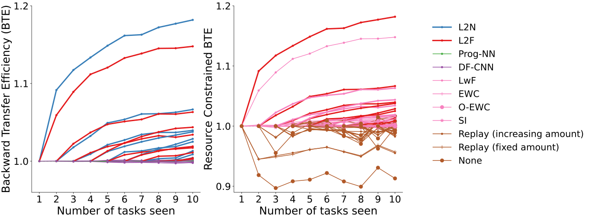

### Lifelong Learning Machines <br> <br> <br> <br> <br> <br> <br> Joshua T. Vogelstein | {[BME](https://www.bme.jhu.edu/),[CIS](http://cis.jhu.edu/), [ICM](https://icm.jhu.edu/), [KNDI](http://kavlijhu.org/)}@[JHU](https://www.jhu.edu/) | [neurodata](https://neurodata.io) <br> [jovo@jhu.edu](mailto:j1c@jhu.edu) | <http://neurodata.io/talks> | [@neuro_data](https://twitter.com/neuro_data) --- ## Key Accomplishments 1. Formalized Lifelong Learning as generalization of classical machine learning 1. Introduced novel evaluation criteria: forward and backward transfer efficiency 1. Proposed omnidirectional transfer learning algorithm framework by ensembling representations 1. Implemented Lifelong Forests (LF) as a specific example 1. Demonstrated LF uniquely exhibits 1. positive forward transfer 1. positive backward transfer 1. positive overall transfer 1. Conjectured theory promising to prove consistency and robustness 1. Described equivalence between Decision Forests and Deep Nets 1. Proposed extension to implement and improve via Deep Nets --- ## Current State of the Art Either 1. Used fixed architecture, finite capacity 2. Increase capacity, with complicated architecture --- ## Key Insights 1. Avoiding catastrophic forgetting simply no data don't hurt performance on old tasks, but why stop there? 1. The key to lifelong learning is the ability to transfer knowledge from one setting to others (both past and future). 2. This can be achieved by 1. Learning new representation functions as necessary 1. Ensembling representations to take actions. --- ## Key Metrics **Transfer Efficiency**: The extent to which performance on a specific task improves by virtue of data from .ye[all other task data]. **Forward Transfer Efficiency**: The extent to which performance on a specific task improves by virtue of data from .ye[all past task data]. **Backward Transfer Efficiency**: The extent to which performance on a specific task improves by virtue of data from .ye[all future task data]. --- ## Key Claims 1. If you don't transfer, you haven't lifelong learned. 2. We propose the only algorithm in the literature the demonstrates weak or strong lifelong learning. --- class: middle ### A General Theory of the Learnable --- ## What is lifelong Learning? Given a sequence of samples associated with different tasks (and task labels if available), a lifelong learning system updates decision rules using the data to improve performances across tasks. A system has .ye[weakly] lifelong learned if the data improves task performance .ye[on average], and has .ye[strongly] lifelong learned if the data improves task performance .ye[for each task]. Thus, the only way to lifelong learn is by .ye[transferring knowledge], ideally both forward (to improve future task performance) and backward (to improve past task performance). Motivation: in biology, learning subsequent tasks often improves performance on past and future tasks. The key is updating internal representations with each sample that are useful for multiple tasks. -- Let's formalize it... --- ## What is Learning? Given $n$ new data points in setting $\mathcal{S}$, assuming $P$, $f$ learns when its performance $\mathcal{E}$ improves due to the data: .center[$f$ learns when $\mathcal{E}(f_n) < \mathcal{E}(f_0)$.] -- $\mathcal{E}(f_0)$ is the performance of $f$ prior to seeing $n$ new data. --- ## What is Learning? Given $n$ new .ye[data] points in .ye[setting] $\mathcal{S}$, .ye[assuming] $P$, .ye[$f$] learns when its .ye[performance] $\mathcal{E}$ improves due to the data: .center[$f$ learns when $\mathcal{E}(f_n) < \mathcal{E}(f_0)$.] --- ## What are data? - $z_i \in \mathcal{Z}$ for $i \in [n]$ are measurements - Classification Example - $Z_i = (X_i,Y_i)$ where $\mathcal{X}=\mathbb{R}^p$ and $\mathcal{Y}=\lbrace 0,1\rbrace$ --- ## What is a Setting? The setting is determined by the available resources: - Sample space: $\mathcal{Z}$, determined by available sensors - e.g., scalars, d-dimensional vectors, networks - Action space: $\mathcal{A}$, determined by available actuators - e.g., {→, ←, ↑, ↓, A,B}, {reject, fail to reject}, $\mathbb{R}$ - Query space: $\mathcal{Q}$, determined by system's "interface" - e.g., in which cluster is $z$? what is this object? - Constraints: $\mathcal{C}$, determined by hardware, time, money, subject matter expertise - e.g., $\mathcal{O}(n)$ training time, k-sparse, 8 GB - A learning setting is an element of the set $\mathcal{S} := \lbrace \mathcal{Z}, \mathcal{A}, \mathcal{Q}, \mathcal{C} \rbrace$ --- ## What are the Assumptions? These are required to have any theoretical performance guarantees, though they can be quite general: - Assume the data, $(Z_1,\ldots, Z_n) \in \mathcal{Z}^n$, are sampled from some true but unknown distribution $P_Z \in \mathcal{P}_Z$ - Assume a query, $q \in \mathcal{Q}$ is sampled from some true but unknown distribution $P_Q \in \mathcal{P}_Q$ - Assume an optimal action , $a \in \mathcal{A}$ given $q$, is sampled from some true but unknown distribution $P\_{A \mid Q} \in \mathcal{P}_{A \mid Q}$ - Let $P = P\_Z \otimes P\_{A, Q} \in \mathcal{P}$ denote the joint distribution over samples, queries, and optimal actions. --- ## What is $f$? We get to choose this, though we must respect the resource constraints defined by the setting: - A hypothesis, $h : \mathcal{Q} \rightarrow \mathcal{A}$ takes an action on the basis of a query - $f_n$ is a learner, which maps from a subset of $n$ samples in $\mathcal{Z}$ to a hypothesis $h \in \mathcal{H}$ - $f=f_1, f_2, \ldots$ is a sequence of learners, called a learning algorithm $$f \in \mathcal{F} = \lbrace f_n : \mathcal{Z}^n \rightarrow \mathcal{H}\rbrace$$ -- - Supervised machine learning example - $f$ is *RandomForestClassifier.fit* - $h$ is *RandomForestClassifier.predict* <!-- --- --> <!-- ## What are Constraints? Provided by subject matter expect and available resources, including: - Distributional constraints $P \in \mathcal{P}$, - e.g, mixture of K Gaussians, or convex - Decision rule (or hypothesis) constraints, $h \in \mathcal{H}$, - e.g., $\mathcal{O}(1)$, or k-sparse - Learning rule constraints, $f \in \mathcal{F}$, - e.g., $\mathcal{O}(n)$, or Decision stump --> <!-- Let $\mathcal{C}= \lbrace \mathcal{P}, \mathcal{H}, \mathcal{F} \rbrace$. --> <!-- Let $\mathcal{S} = \lbrace \mathcal{Z}, \mathcal{Q}, \mathcal{A}, \mathcal{P}, \mathcal{H}, \mathcal{F} \rbrace$. --> <!-- --- --> <!-- ## Constraints --> <!-- $\mathcal{P}$, $\mathcal{H}$, and $\mathcal{F}$ are sets of constraints on learning --> <!-- | Constraint | Example | | :--- | :--- | interpretability | hyperplanes or sparse | complexity | $\mathcal{O}(n)$ | memory | $< 1$ gigabyte of memory for a given dataset | time | $< 1$ sec on a specific hardware configuration for a given dataset | scalability| must operate on distributed storage/compute | power | $< 1$ watt on a given system for a given dataset | price | $< 1$ USD on a given system for a given dataset | hardware | must run on iPhone X --> --- ## What is Performance? - Loss quantifies the error of a specific action $a$ taken by $h$ for a query $q$, $\ell: \mathcal{A} \times \mathcal{A} \to \mathbb{R}$, where $\ell \in \mathcal{L}$, - e.g., 0-1 loss: $ \ell(a, a') := \mathbb{I}[a \neq a']. $ <!-- $\mathsf{l}, \mathsf{R}, \mathsf{E}, \mathsf{h}, l, R, E, h$ --> -- - Risk quantifies the loss over the whole query sample space, $\mathcal{R} = \lbrace R : \mathcal{H} \times \mathcal{L} \times \mathcal{P}\_{Q, A} \to \mathbb{R} \rbrace$ - We think of this only as a function of $h \in \mathcal{H}$, because the loss and distribution effectively index the function - eg, expected loss $ R(h) := R(h; \ell, P\_{Q, A}) = \ \mathbb{E}\_{Q, A}[\ell(h(Q), A)]. $ --- ## What is Performance? - Performance, also called generalization .ye[error], quantifies risk over the distribution of possible training datasets, $\mathcal{E} : \mathcal{F} \times \mathcal{R} \times \mathcal{P}\_{z} \to \mathbb{R}$, - We think of this only as a function of $f\_n \in \mathcal{F}$, for the same reason as above - e.g., expected risk: $ \mathcal{E}(f\_n) := \mathcal{E}(f\_n; R, P\_Z) = \mathbb{E}\_Z[R(f\_n(\cdot))]. $ <!-- TODO@ronak i put a \cdot in there. ok? --> --- ## What is Learning? Given $n$ new data points in setting $\mathcal{S}$, assuming $P$, $f$ learns when its performance $\mathcal{E}$ improves due to the data: .center[$f$ learns when $\mathcal{E}(f_n) < \mathcal{E}(f_0)$.] $\mathcal{E}(f_0)$ is the performance of $f$ prior to seeing $n$ new data points, and therefore a function of - prior on $\theta$ - inductive bias of $\mathcal{H}$ - estimation bias of $f$ - model bias of $\mathcal{P}$ - pre-training <!-- ## What is a Setting? A setting is defined by a septuple $\mathcal{S} = \lbrace \mathcal{Z}, \mathcal{A}, \mathcal{L}, \mathcal{R}, \mathcal{P}, \mathcal{H}, \mathcal{F} \rbrace$ | Object | Notation | Example |:--- |:--- |:--- | | Measurements | $ \mathcal{Z}^n$ | $\mathbb{R}^p \times \lbrace 0, 1 \rbrace$ | | Actions | $\mathcal{A}$ | {↑,↓,←, →,B,A,start} | Loss | $\mathcal{L}: \mathcal{A} \to \mathbb{R}_+$ | $ (\hat{y} - y_*)^2$ | Risk | $\mathcal{R}: \mathcal{P} \times \mathcal{L} \to \mathbb{R}_+$ | $\mathbb{E}_P[ \mathcal{L}(a)]$ | Distributions | $\mathcal{P} := \lbrace P_Z \rbrace$ | Gaussian | Hypotheses | $\mathcal{H} = \lbrace h: \mathcal{Z} \to \mathcal{A} \rbrace$ | hyperplanes | Algorithms | $\mathcal{F} = \lbrace f : 2^{\mathcal{Z}^n} \to \mathcal{H} \rbrace$ | *RandomForest.fit* --> --- ## What is a Learning Task? - Given - a sample size $n$ - a setting $\mathcal{S}$ - Assume a true but unknown distribution $P \in \mathcal{P}$ - Find $f$ that minimizes generalization error $$f^* = \arg \min\_{f} \, \mathcal{E}\_P(f_n).$$ --- ## What is Transfer Learning? - Let - $t_i \in \lbrace 0, 1 \rbrace$ label each sample, where $0$ denotes source and $1$ denotes target - $\mathcal{Z}' = (\mathcal{Z},\lbrace 0,1 \rbrace)$ - Assume $(Z\_i,T\_i)$ is sampled iid from $P\_{Z,T}$, $Z\_i | T\_i=j \sim P\_t$, - Let $P = P_{Z,T} \otimes P_Q \in \mathcal{P}'$ - Define a transfer learning algorithm $f=f_1, f_2, \ldots$ as any sequence where $$ \mathcal{F}_{TL} = \lbrace f_n : (\mathcal{Z} \times \lbrace 0,1 \rbrace )^n \rightarrow \mathcal{H} \rbrace$$ - Let $f^t$ denote the learner that only sees samples where $t_i=t$. <!-- - Define a transfer learning setting as $\mathcal{S}\_{TL} = \lbrace \mathcal{Z}', \mathcal{A}, \mathcal{Q}, \mathcal{C} \rbrace$ --> - Identify the appropriate performance function. --- ## What is Transfer Learning? Given $n$ source target data points in transfer learning setting $\mathcal{S}\_{TL}$, assuming $P$, $f$ .ye[transfer] learns when its performance $\mathcal{E}$ improves due to the source data: .center[$f$ learns when $\mathcal{E}(f_n) < \mathcal{E}(f_n^1)$.] --- ## A Transfer Learning Task? - Given - a sample size $n$ - a transfer learning setting $\mathcal{S} := \mathcal{S}\_{TL} = \lbrace \mathcal{Z}', \mathcal{A}, \mathcal{Q}, \mathcal{C} \rbrace$ - Assume a true but unknown distribution $P \in \mathcal{P}'$ - Find $f$ that minimizes generalization error $$f^* = \arg \min\_{f} \, \mathcal{E}\_P(f_n).$$ --- ## What is a Multitask? - Let - $t_i \in [T]$ denote the task associated with sample $i$ - $\mathcal{Z}' = (\mathcal{Z}, [T])$ - Assume $(Z\_i,T\_i)$ is sampled iid from $P\_{Z,T}$, $Z\_i | T\_i=t \sim P\_t$, - Let $P = P_{Z,T} \otimes P_Q \in \mathcal{P}'$ - Define a multi-task learning algorithm $f=f_1, f_2, \ldots$ as any sequence where $$ \mathcal{F}_{MT} = \lbrace f_n : (\mathcal{Z} \times [T] )^n \rightarrow \mathcal{H} \rbrace$$ - Let $f^t$ denote the learner that only sees samples where $t_i=t$. - Identify the appropriate performance functions $\lbrace \mathcal{E}_t \rbrace$. --- ## What is Multitask Learning? Given $n$ data points in multitask learning setting $\mathcal{S}\_{MT}$, assuming $P$, $f$ .ye[weakly multitask] learns when its performances $\lbrace \mathcal{E}_t \rbrace$ improve due to other task's data .ye[on average]: $$ \sum\_{t \in [T]} \mathcal{E}\_t(f\_n ) P(t) < \sum\_{t \in [T]} \mathcal{E}\_t(f\_n^t) P(t),$$ <br> $f$ .ye[strongly multitask] learns when its performances $\lbrace \mathcal{E}_t \rbrace$ improve due to other task's data .ye[for each task]: $$ \mathcal{E}\_t(f_n) < \mathcal{E}\_t(f_n^t) \quad \forall t \in [T].$$ --- ## What is Sequential Learning? Same as classical single task ("batch") learning, except $f$ .ye[explicitly] updates existing hypotheses on basis of new data, that is, $$\mathcal{F}_S = \lbrace f : \mathcal{H} \times {\mathcal{Z}^n} \rightarrow \mathcal{H} \rbrace$$ -- This is useful when either or both: - the data arrive sequentially - the constraints in a setting demand a fixed capacity --- ## What is a Lifelong Task? Sequential multi-task learning, where - $|\mathcal{T}|$ is a (countably) infinite set of tasks - $T_n$ is the number of tasks observed after $n$ samples - Requires .ye[out of task] capabilities --- ## What is a Lifelong Task? - Let - $t_i \in \color{yellow}{\mathcal{T}}$ denote the task associated with sample $i$ - $\mathcal{Z}' = (\mathcal{Z}, \mathcal{T})$ - Assume $(Z\_i,T\_i)$ is sampled iid from $P\_{Z,T}$, $Z\_i | T\_i=t \sim P\_t$, - Let $P = P_{Z,T} \otimes P_Q \in \mathcal{P}'$ - Define a lifelong learning algorithm $f=f_1, f_2, \ldots$ as any sequence where $$ \mathcal{F}_{L2} = \lbrace f_n : \mathcal{H} \times (\mathcal{Z} \times \mathcal{T} )^n \rightarrow \mathcal{H} \rbrace$$ - Let $f^t$ denote the learner that only sees samples where $t_i=t$. - Identify the appropriate performance functions $\lbrace \mathcal{E}_t \rbrace$. --- ## What is Lifelong Learning? Given $n$ data points sequentially in lifelong learning setting $\mathcal{S}\_{L2}$, assuming $P$, $f$ .ye[weakly lifelong] learns when its performances $\lbrace \mathcal{E}_t \rbrace$ improve due to other task's data .ye[on average]: $$ \sum\_{t \in [T\_n]} \mathcal{E}\_t(f\_n ) P(t) < \sum\_{t \in [T\_n]} \mathcal{E}\_t(f\_n^t) P(t),$$ <br> $f$ .ye[strongly lifelong] learns when its performances $\lbrace \mathcal{E}_t \rbrace$ improve due to other task's data .ye[for each task]: $$ \mathcal{E}\_t(f_n) < \mathcal{E}\_t(f_n^t) \quad \forall t \in [T\_n].$$ --- class: middle ### Lifelong Learning Scenarios --- ## Ways Tasks can Differ | Component | Change | | :--- | :--- | $\mathcal{Z}$ | {smaller, bigger, different} | $\mathcal{A}$ | {smaller, bigger, different} | $\mathcal{Q}$ | {smaller, bigger, different} | $\mathcal{C}$ | {smaller, bigger, different} | $\mathcal{P}$ | {smaller, bigger, different} | $\mathcal{E}$ | {different} | $P$ | {different} | $T_i$ | {always, never, sometimes} known --- ## Ways to Lifelong Learn - There are $4^5\times2^2\times3 = 12$,$288$ ways that 2 tasks can differ. - Ignoring constraints, we have $3$,$072$ - Ignoring performance functions, we have $1$,$536$. --- ## Examples 1. Task 2: $P$ and $\mathcal{A}$ are different, - this is "Task Incremental Learning" (CIFAR 10x10) 1. Task 2: $P$ changes and $\mathcal{A}$ gets bigger, - this is "Class Incremental Learning" 1. Task 2: $P$ changes, but $f$ does not know (continual learning) --- class: middle ### Lifelong Learning Metrics --- ## Transfer Efficiency (TE) The transfer efficiency of learning algorithm $f$ for task $t$ is $$ TE\_t(f) := \frac{\mathcal{E}\_t(f^t_n)}{\mathcal{E}\_t(f_n)}. $$ <br> Algorithm $ f $ transfer learns if $ TE_t(f) > 1 $. --- ## Forward / Backward TE - Let $f^{\leq t}_n$ denote the algorithm with all access up to the last sample associated with task $t$. <!-- - Let $\mathcal{D}_F^t = \{(X_i, Y_i, T_i) \in \, \mathcal{D} : i \leq n_t\}$ be the set of all data up to sample $n_t$. --> - .ye[Forward] transfer efficiency of $ f $ for task $t$ is the improvement on task $t$ resulting from all data .ye[preceding] task $t$ $$ FTE_t(f) := \frac{\mathcal{E}_t(f^t_n)}{\mathcal{E}_t(f^{\leq t}_n)}. $$ -- <!-- ## Backward Transfer Efficiency --> <!-- Backward Transfer Efficiency (BTE) for task $t$ measures the improvement on task $t$ resulting from all data occurring after the last sample $i$ with $T_i = j$. --> - .ye[Backward] transfer efficiency of $ f $ for task $t$ is the improvement on task $t$ resulting from all data .ye[after] task $t$ <!-- The backward transfer efficiency of $ f $ for task $t$ is --> $$ BTE\_t(f) := \frac{\mathcal{E}\_t(f^{\leq t}_n)}{\mathcal{E}_t(f_n)}. $$ --- ## TE Factorizes $$ TE\_t(f) := \frac{\mathcal{E}\_t(f^t\_n)}{\mathcal{E}\_t(f\_n)} = \frac{\mathcal{E}_t(f^t_n)}{\mathcal{E}_t(f^{\leq t}_n)} \times \frac{\mathcal{E}\_t(f^{\leq t}_n)}{\mathcal{E}_t(f_n)}. $$ --- class: middle ### Algorithm --- ## Basic Idea For each new task, learn a new representation function, apply it to all data from all tasks, and the updated representation for everything is the composition of this new representation with existing representations. Then, update decision rule using this representation. Notes: - This linearly increases representation capacity. - Without increasing representation capacity, performance on all tasks will necessarily drop to chance levels eventually as number of tasks increases. - Thus, fixed capacity systems can only lifelong learn insofar as they are inefficient (unnecessarily big) for individual tasks. --- ## Composable Hypotheses .center[ .ye[$h(\cdot) := w \circ v \circ u (\cdot) = w(v(u(\cdot)))$]] - Let $u$ be .ye[transformer] data to a new representation, $$ u : \mathcal{X} \to \tilde{\mathcal{X}}$$ - Let $v$ be .ye[voter] which operate on the transformed data outputs votes on all possible actions $$ v : \tilde{\mathcal{X}} \to \mathcal{P}_{A|X}$$ - Let $w$ be .ye[decider] which decides which actions to take on the basis of the votes $$ w : \mathcal{P}_{A|X} \to \mathcal{A}$$ --- ## Simple Examples - Linear Discriminant Analysis (shallow) - $u$: projection onto a line - $v$: fraction of points per over/under threshold - $w$: maximum a posteriori class -- - Decision Tree (deep) - $u$: union of polytopes - $v$: fraction of points per class per leaf node - $w$: maximum a posteriori class --- ## Complicated Example - Decision Forest - $u_b$ for $B$ trees: union of overlapping polytopes - $v_b$ for $B$ trees: fraction of points per class per leaf node - $w$: maximum a posteriori class averaging over trees -- - Deep Nets - $u$: "backbone" (all but last layer) - $v$: softmax layer - $w$: max --- ## Key Idea - .ye[Different transformers can composed with voters] - Learn many different transformers $u_t(\cdot)$'s - For each $u\_t$, learn voter per task $v\_{t,t'}$'s - Use the decider to weight the various options - This is .ye[ensembling representations]. ### Notes - We learn new representation for each task. - Dimensionality of internal representation grows linearly with number of tasks. <!-- TODO@jv: somewhere must introduce the concept of adjusting representations --> --- ## Composable Learning <br> | Scenario | Composition | :--- | :--- | Single task learning | $ h(\cdot) = w \circ v \circ u (\cdot)$ | Multiple independent task learning | $ h_t(\cdot) = w_t \circ v_t \circ u_t (\cdot)$ | Single task ensemble learning |$ h(\cdot) = w \circ \bigcup_t [ v_t \circ u_t (\cdot)] $ | Multitask learning | $ h_t(\cdot) = w_t \circ v \circ \bigcup_t u_t (\cdot)$ | .ye[Multitask ensemble representation learning] | $ h\_t(\cdot) = w\_t \circ \bigcup\_{t'} [v\_{t,t'} \circ u\_{t'} (\cdot) ] $ --- ## Lifelong Learning Schema  <!-- TODO@jv: add increasing complexity schema --> <!-- TODO@jv: change to progressive? --> - Any learner with an explicit internal representation is ok, - e.g., decision trees, decision forests, deep networks - SVM's are not --- ## General Representations - Transformers learn representations - We desire representations that are sufficient for one task, and useful for other tasks - Decision trees, decision forests, and deep nets (with ReLu nodes) .ye[partition] feature space into polytopes --  <!-- <img src="images/deep-polytopes.png" style="width:500px;"/> --> --- class: middle ### Simulations --- ## A Transfer Example - .ye[XOR] - Samples in the (0,0) and (1,1) quadrants are purple - samples in the (0,1) and (1,0) quadrants are green - .lb[N-XOR] - Samples in the (0,0) and (1,1) quadrants are green - samples in the (0,1) and (1,0) quadrants are purple - Optimal decision boundaries for both problems are coordinate axes <img src="images/l2m_18mo/xor_nxor.png" style="width:475px" class="center"/> --- ## Lifelong Classifier <img src="images/columbia20/xor-nxor-all.png" style="height:300px;"> - .lb[Uncertainty Forest] uses 100 samples from XOR to learn partitions <!-- - .orange[Transfer Forest] uses $n$ samples from N-XOR to learn partitions --> - .ye[Lifelong Forest] uses 100 samples from XOR and $n$ samples from N-XOR to learn partitions <!-- TODO@hh: replace with four panel figure: TOP LEFT: XOR TOP RIGHT: N-XOR BOTTOM LEFT: x-axis is simply # samples, and y-axis is Generalization Error, and we show 4 lines: E_1(D_1), E_1(D_n), E_2(D_2), E_2(D_n) BOTTOM RIGHT: x-axis is # of samples, maybe starting with n/2, y-axis is TE, two lines, TE_1 and TE_2 --> --- ## Lifelong Classifier <img src="images/columbia20/xor-nxor-all2.png" style="height:500px;"> --- ## Different # of Classes <img src="images/spiral-all.png" style="height:500px;"> <!-- TODO@hh: replace with same 4 panel figure as above --> --- ## Graceful Forgetting <img src="images/rxor-suite-new-row.png" style="width:700px;"> --- class: middle ### Real Data --- ## Consider an example .pull-left[ - *CIFAR 100* is a popular image classification dataset with 100 classes of images. - 500 training images and 100 testing images per class. - All images are 32x32 color images. - CIFAR 10x10 breaks the 100-class task problem into 10 tasks, each with 10-class. ] .pull-right[ <img src="images/l2m_18mo/cifar-10.png" style="position:absolute; left:450px; width:400px;"/> ] <!-- TODO@JD: replace CIFAR10 image with same thing but using CIFAR100 images and categories --> --- ## Previous State-of-the-Art <img src="images/l2m_18mo/progressive_netsc.png" style="width:650px;"/> Andrei A. Rusu et al. [Progressive Neural Networks](https://arxiv.org/abs/1606.04671), arXiv, 2016. <!-- Seungwon Lee, James Stokes, and Eric Eaton. "[Learning Shared Knowledge for Deep Lifelong Learning Using Deconvolutional Networks](https://www.ijcai.org/proceedings/2019/393)." IJCAI, 2019. --> --- ## Forward Transfer Efficiency - y-axis indicates .ye[forward transfer efficiency] (FTE), - which is the ratio of "single task error" to "error using past tasks" - each algorithm has a line - if the line .ye[increases], that means it is doing "forward transfer" --- Lifelong Forests demonstrates the .ye[largest forward transfer].  --- ## Backward Transfer Efficiency - y-axis indicates .ye[backward transfer efficiency] (BTE), - which is the ratio of "single task error" to "error using future tasks" - each task will have a line - if the line .ye[increases], that means it is doing "backward transfer" --- Lifelong Forests .ye[uniquely exhibits backward transfer]. <!-- <img src="images/CIFAR_BTE.png" style="height:530px;" /> --> <!-- TODO@JD: replace with average BTE and add legend outside --> <!--  -->  --- Lifelong Forests uniquely exhibits .ye[strong] lifelong learning. | Algorithm | Average TE | Min TE |:--- |:--- |:--- | | LF | .ye[1.13 (±0.01)] | .ye[1.10 (±0.01)] | DF-CNN | 0.75 (±0.08) | 0.40 (±0.01) | Online EWC | 0.96 (±0.01) | 0.88 (±0.01) | EWC | 0.97 (±0.01) | 0.91 (±0.01) | SI | 0.86 (±0.02) | 0.75 (±0.01) | LwF | 1.00 (±0.01) | 0.97 (±0.01) | ProgNN | 1.02 (±0.01) | 0.97 (±0.01) <!-- <img src="images/all_TE.png" style="height:250px;" /> --> <!-- <img src="images/all_TE_2.png" style="height:500px;" /> --> --- Lifelong Forests accuracy is worse than .ye[C]NNs with O(10M) parameters, and better than .ye[D]NNs with O(1M) parameters.  --- class: middle ### Theory --- ## What do classifiers do? <br> learn: given $(x_i,y_i)$, for $i \in [n]$, where $y \in \lbrace 0,1 \rbrace$ 1. partition feature space into "parts", 2. compute plurality of points in each part. predict: given $x$ 2. find its part, 3. report the plurality vote in its part. --- ## What can regressors do? <br> learn: given $(x_i,y_i)$, for $i \in [n]$, where $y \in \mathbb{R}$ 1. partition feature space into "parts", 2. compute average of points in each part. predict: given $x$ 2. find its part, 3. report the average vote in its part. --- ## The fundamental theorem of statistical pattern recognition If each part is: 1. small enough, and 2. has enough points in it, then given enough data, one can learn *perfectly, no matter what*! $$\mathcal{E}\(f,\mathcal{D}) \rightarrow \mathcal{E}^*,$$ where $\mathcal{E}^*$is Bayes optimal. -- Stone, 1977 <!-- NB: the parts can be overlapping (as in kNN) or not (as in histograms) --> --- ## The fundamental .ye[conjecture] of transfer learning If each cell is: - small enough, and - has enough points in it, then given enough data, one can .ye[transfer learn] *perfectly, no matter what*! -- jovo, 2020 --- class: middle ### Discussion --- ## Limitations 2. Tasks must be discrete 3. Data must be batched into tasks (no sequential implementation) 4. Tasks must be known (no implementation that imputes task ID) 5. Feature space must be the same for all tasks (no data fusion step) 6. Only unimodal data supported (no multimodal implementation) 1. Internal representation grows linearly with # of tasks (no pruning) 1. Must grow rather than recruit new internal representations (no pre-training implemented) 1. No support for specific modalities (e.g., images) 1. No extension to reinforcement learning 1. No implementation using deep nets --- ## Publications 1. H. Helm et al. Lifelong Learning Forests, 2020 1. R. Mehta et al. A General Theory of Learnability, 2020. 1. R Guo, et al. [Estimating Information-Theoretic Quantities with Uncertainty Forests](https://arxiv.org/abs/1907.00325). arXiv, 2019. 1. R. Perry, et al. Manifold Forests: Closing the Gap on Neural Networks. preprint, 2019. 1. C. Shen and J. T. Vogelstein. [Decision Forests Induce Characteristic Kernels](https://arxiv.org/abs/1812.00029). arXiv, 2019 1. M. Madhya, et al. [Geodesic Learning via Unsupervised Decision Forests](https://arxiv.org/abs/1907.02844). arXiv, 2019. --- ## Conferences 1. J.T. Vogelstein et al. A biological implementation of lifelong learning in the pursuit of artificial general intelligence. From Neuroscience to Artificially Intelligent Systems, 2020. 2. B. Pedigo et al. A quantitative comparison of a complete connectome to artificial intelligence architectures. From Neuroscience to Artificially Intelligent Systems, 2020. --- ### Acknowledgements <!-- <div class="small-container"> <img src="faces/ebridge.jpg"/> <div class="centered">Eric Bridgeford</div> </div> <div class="small-container"> <img src="faces/pedigo.jpg"/> <div class="centered">Ben Pedigo</div> </div> <div class="small-container"> <img src="faces/jaewon.jpg"/> <div class="centered">Jaewon Chung</div> </div> --> <div class="small-container"> <img src="faces/yummy.jpg"/> <div class="centered">yummy</div> </div> <div class="small-container"> <img src="faces/lion.jpg"/> <div class="centered">lion</div> </div> <div class="small-container"> <img src="faces/violet.jpg"/> <div class="centered">baby girl</div> </div> <div class="small-container"> <img src="faces/family.jpg"/> <div class="centered">family</div> </div> <div class="small-container"> <img src="faces/earth.jpg"/> <div class="centered">earth</div> </div> <div class="small-container"> <img src="faces/milkyway.jpg"/> <div class="centered">milkyway</div> </div> ##### JHU <div class="small-container"> <img src="faces/cep.png"/> <div class="centered">Carey Priebe</div> </div> <!-- <div class="small-container"> <img src="faces/randal.jpg"/> <div class="centered">Randal Burns</div> </div> --> <!-- <div class="small-container"> <img src="faces/cshen.jpg"/> <div class="centered">Cencheng Shen</div> </div> --> <!-- <div class="small-container"> <img src="faces/bruce_rosen.jpg"/> <div class="centered">Bruce Rosen</div> </div> <div class="small-container"> <img src="faces/kent.jpg"/> <div class="centered">Kent Kiehl</div> </div> --> <!-- <div class="small-container"> <img src="faces/mim.jpg"/> <div class="centered">Michael Miller</div> </div> <div class="small-container"> <img src="faces/dtward.jpg"/> <div class="centered">Daniel Tward</div> </div> --> <!-- <div class="small-container"> <img src="faces/vikram.jpg"/> <div class="centered">Vikram Chandrashekhar</div> </div> <div class="small-container"> <img src="faces/drishti.jpg"/> <div class="centered">Drishti Mannan</div> </div> --> <div class="small-container"> <img src="faces/jesse.jpg"/> <div class="centered">Jesse Patsolic</div> </div> <!-- <div class="small-container"> <img src="faces/falk_ben.jpg"/> <div class="centered">Benjamin Falk</div> </div> --> <!-- <div class="small-container"> <img src="faces/kwame.jpg"/> <div class="centered">Kwame Kutten</div> </div> --> <!-- <div class="small-container"> <img src="faces/perlman.jpg"/> <div class="centered">Eric Perlman</div> </div> --> <!-- <div class="small-container"> <img src="faces/loftus.jpg"/> <div class="centered">Alex Loftus</div> </div> --> <!-- <div class="small-container"> <img src="faces/bcaffo.jpg"/> <div class="centered">Brian Caffo</div> </div> --> <!-- <div class="small-container"> <img src="faces/minh.jpg"/> <div class="centered">Minh Tang</div> </div> --> <!-- <div class="small-container"> <img src="faces/avanti.jpg"/> <div class="centered">Avanti Athreya</div> </div> --> <!-- <div class="small-container"> <img src="faces/vince.jpg"/> <div class="centered">Vince Lyzinski</div> </div> --> <!-- <div class="small-container"> <img src="faces/dpmcsuss.jpg"/> <div class="centered">Daniel Sussman</div> </div> --> <!-- <div class="small-container"> <img src="faces/youngser.jpg"/> <div class="centered">Youngser Park</div> </div> --> <!-- <div class="small-container"> <img src="faces/shangsi.jpg"/> <div class="centered">Shangsi Wang</div> </div> --> <!-- <div class="small-container"> <img src="faces/tyler.jpg"/> <div class="centered">Tyler Tomita</div> </div> --> <!-- <div class="small-container"> <img src="faces/james.jpg"/> <div class="centered">James Brown</div> </div> --> <!-- <div class="small-container"> <img src="faces/disa.jpg"/> <div class="centered">Disa Mhembere</div> </div> --> <!-- <div class="small-container"> <img src="faces/gkiar.jpg"/> <div class="centered">Greg Kiar</div> </div> --> <!-- <div class="small-container"> <img src="faces/jeremias.png"/> <div class="centered">Jeremias Sulam</div> </div> --> <div class="small-container"> <img src="faces/meghana.png"/> <div class="centered">Meghana Madhya</div> </div> <!-- <div class="small-container"> <img src="faces/percy.png"/> <div class="centered">Percy Li</div> </div> --> <div class="small-container"> <img src="faces/hayden.png"/> <div class="centered">Hayden Helm</div> </div> <div class="small-container"> <img src="faces/rguo.jpg"/> <div class="centered">Richard Gou</div> </div> <div class="small-container"> <img src="faces/ronak.jpg"/> <div class="centered">Ronak Mehta</div> </div> <div class="small-container"> <img src="faces/jayanta.jpg"/> <div class="centered">Jayanta Dey</div> </div> ##### Microsoft Research <div class="small-container"> <img src="faces/chwh-180x180.jpg"/> <div class="centered">Chris White</div> </div> <div class="small-container"> <img src="faces/weiwei.jpg"/> <div class="centered">Weiwei Yang</div> </div> <div class="small-container"> <img src="faces/jolarso150px.png"/> <div class="centered">Jonathan Larson</div> </div> <div class="small-container"> <img src="faces/brtower-180x180.jpg"/> <div class="centered">Bryan Tower</div> </div> ##### DARPA Hava, Ben, Robert, Jennifer, Ted. </div> <!-- <img src="images/funding/nsf_fpo.png" STYLE="HEIGHT:95px;"/> --> <!-- <img src="images/funding/nih_fpo.png" STYLE="HEIGHT:95px;"/> --> <!-- <img src="images/funding/darpa_fpo.png" STYLE=" HEIGHT:95px;"/> --> <!-- <img src="images/funding/iarpa_fpo.jpg" STYLE="HEIGHT:95px;"/> --> <!-- <img src="images/funding/KAVLI.jpg" STYLE="HEIGHT:95px;"/> --> <!-- <img src="images/funding/schmidt.jpg" STYLE="HEIGHT:95px;"/> --> --- class:center <img src="images/l_and_v.jpeg" style=" height:600px;"/> --- class: middle, inverse ## .center[Extra Slides] --- ## Background 3. T. M. Tomita et al. [Sparse Projection Oblique Randomer Forests](https://arxiv.org/abs/1506.03410). arXiv, 2018. 7. J. Browne et al. [Forest Packing: Fast, Parallel Decision Forests](https://arxiv.org/abs/1806.07300). SIAM ICDM, 2018. More info: [https://neurodata.io/sporf/](https://neurodata.io/sporf/) --- class: middle # Biology --- ## Do brains do it? -- (brains obviously learn) 1. Do brains partition feature space? 2. Is there some kind of "voting" occurring within each part? --- ## Brains partition - Feature space = the set of all possible inputs to a brain - Partition = only a subset of "nodes" respond to any given input - Examples 1. visual receptive fields 2. place fields / grid cells 3. sensory homonculus <br> <img src="images/rock20/Side-black.gif" style="height:230px;"/> <img src="images/rock20/Front_of_Sensory_Homunculus.gif" style="height:230px;"/> <img src="images/rock20/Rear_of_Sensory_Homunculus.jpg" style="height:230px;"/> --- ## Brains vote - Vote = pattern of responses indicate which stimulus evoked response <img src="images/rock20/brody1.jpg" style="height:400px;" /> --- ## Can Humans Backward Transfer? - "Knowledge and skills from a learner’s first language are used and reinforced, deepened, and expanded upon when a learner is engaged in second language literacy tasks." -- [American Council on the Teaching of Foreign Languages](https://www.actfl.org/guiding-principles/literacy-language-learning) --- ## Proposed Experiments - Behavioral Experiment - Source Task: Delayed Match to Sample (DMS) on colors - Target Task A: Delayed Match to Not-Sample on colors - Target Task B: DMS on orientation - Measurements - Arc-GFP to identify which neurons could learn - Ca2+-YFP to measure neural activity - Narp-RFP to identify which neurons actually consolidate - Species - Zebrafish (Engert) - Mouse (McNaughton and/or Tolias) - Human (Isik) --- class: middle # Other Stuff --- ## Not So Clevr <img src="images/not-so-clevr.png" style="width:650px" /> --- ### RF is more computationally efficient <img src="images/s-rerf_6plot_times.png" style="width:750px;"/>